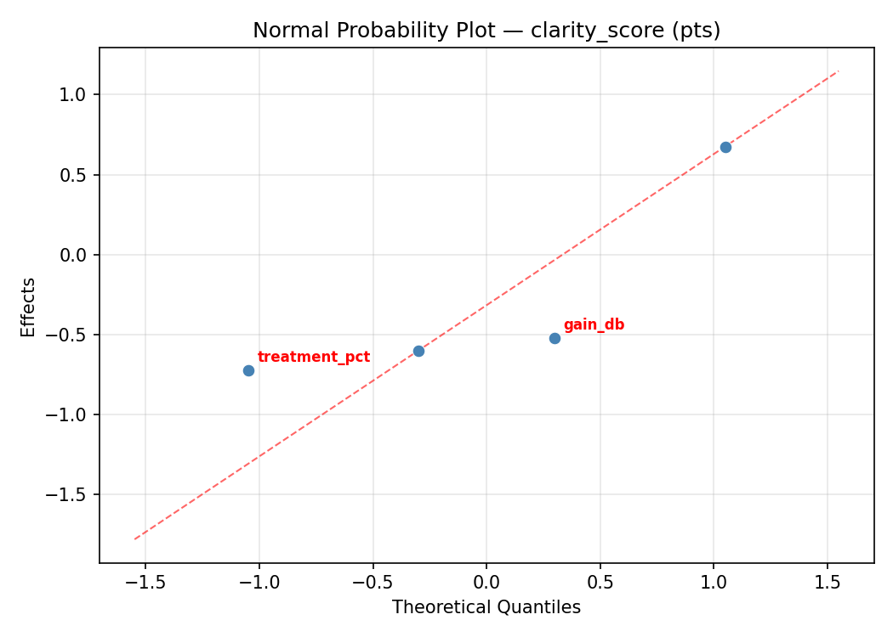
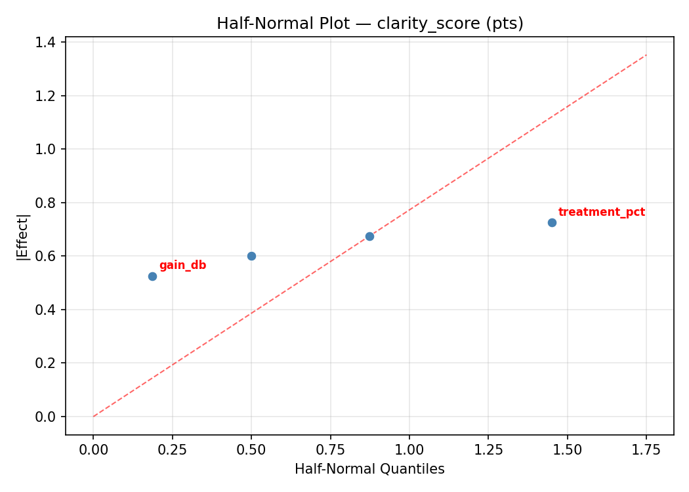
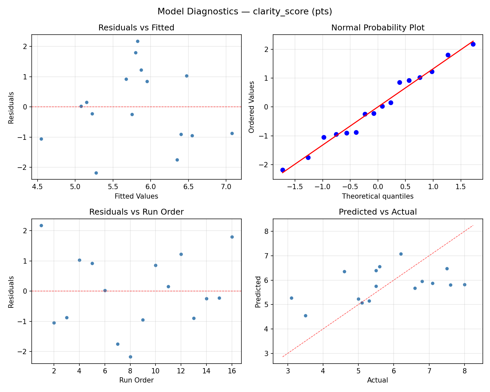
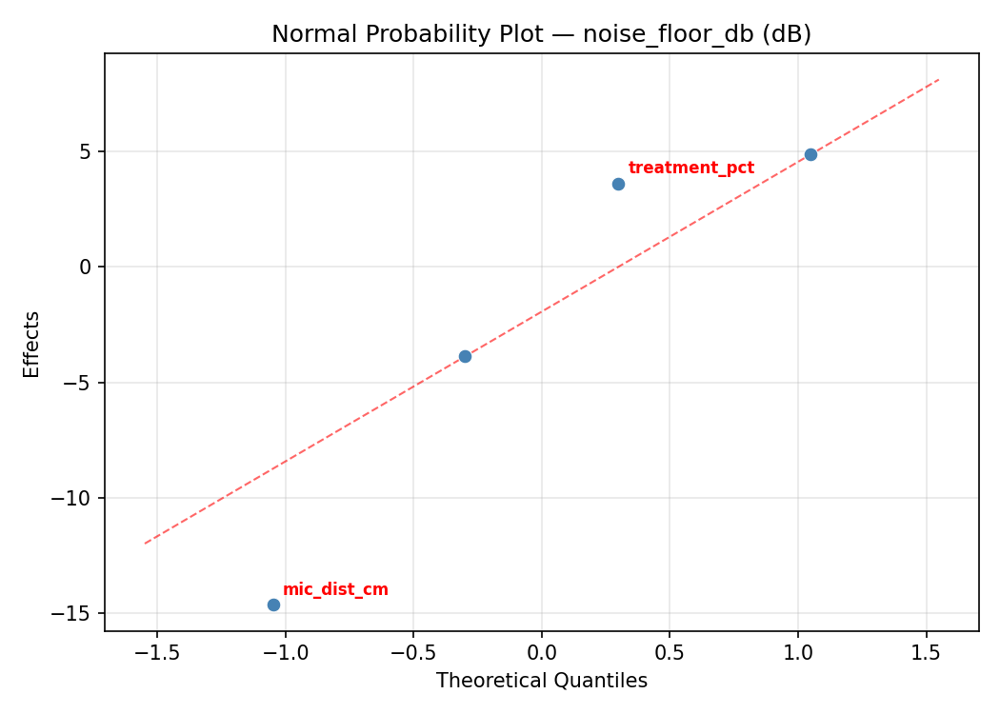
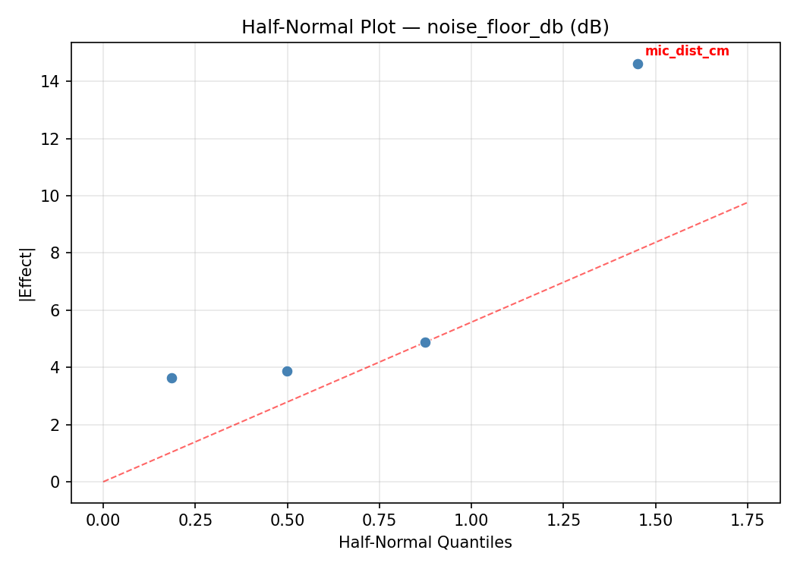
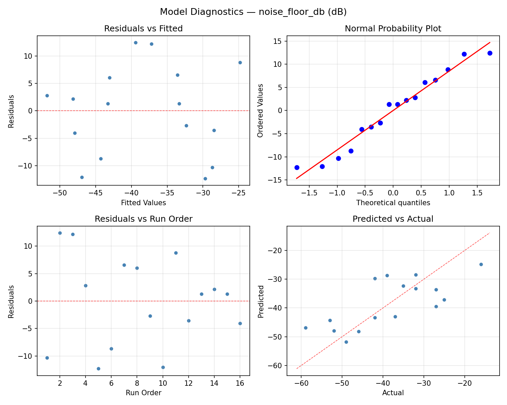

Summary
This experiment investigates podcast recording quality. Full factorial of mic distance, gain level, room treatment, and noise gate threshold to maximize voice clarity and minimize background noise.
The design varies 4 factors: mic dist cm (cm), ranging from 5 to 30, gain db (dB), ranging from 20 to 50, treatment pct (%), ranging from 0 to 80, and gate db (dB), ranging from -60 to -30. The goal is to optimize 2 responses: clarity score (pts) (maximize) and noise floor db (dB) (minimize). Fixed conditions held constant across all runs include mic type = large_diaphragm_condenser, sample rate = 48000.
A full factorial design was used to explore all 16 possible combinations of the 4 factors at two levels. This guarantees that every main effect and interaction can be estimated independently, at the cost of a larger experiment (16 runs).
Quadratic response surface models were fitted to capture potential curvature and factor interactions. The RSM contour plots below visualize how pairs of factors jointly affect each response.
Key Findings
For clarity score, the most influential factors were mic dist cm (30.1%), gain db (30.1%), gate db (22.9%). The best observed value was 8.0 (at mic dist cm = 30, gain db = 50, treatment pct = 80).
For noise floor db, the most influential factors were gain db (67.0%), treatment pct (23.6%), mic dist cm (6.6%). The best observed value was -59.0 (at mic dist cm = 5, gain db = 20, treatment pct = 0).
Recommended Next Steps
- Consider whether any fixed factors should be varied in a future study.
Experimental Setup
Factors
| Factor | Low | High | Unit |
|---|
mic_dist_cm | 5 | 30 | cm |
gain_db | 20 | 50 | dB |
treatment_pct | 0 | 80 | % |
gate_db | -60 | -30 | dB |
Fixed: mic_type = large_diaphragm_condenser, sample_rate = 48000
Responses
| Response | Direction | Unit |
|---|
clarity_score | ↑ maximize | pts |
noise_floor_db | ↓ minimize | dB |
Configuration
{
"metadata": {
"name": "Podcast Recording Quality",
"description": "Full factorial of mic distance, gain level, room treatment, and noise gate threshold to maximize voice clarity and minimize background noise"
},
"factors": [
{
"name": "mic_dist_cm",
"levels": [
"5",
"30"
],
"type": "continuous",
"unit": "cm"
},
{
"name": "gain_db",
"levels": [
"20",
"50"
],
"type": "continuous",
"unit": "dB"
},
{
"name": "treatment_pct",
"levels": [
"0",
"80"
],
"type": "continuous",
"unit": "%"
},
{
"name": "gate_db",
"levels": [
"-60",
"-30"
],
"type": "continuous",
"unit": "dB"
}
],
"fixed_factors": {
"mic_type": "large_diaphragm_condenser",
"sample_rate": "48000"
},
"responses": [
{
"name": "clarity_score",
"optimize": "maximize",
"unit": "pts"
},
{
"name": "noise_floor_db",
"optimize": "minimize",
"unit": "dB"
}
],
"settings": {
"operation": "full_factorial",
"test_script": "use_cases/160_podcast_recording/sim.sh"
}
}
Experimental Matrix
The Full Factorial Design produces 16 runs. Each row is one experiment with specific factor settings.
| Run | mic_dist_cm | gain_db | treatment_pct | gate_db |
|---|
| 1 | 5 | 50 | 80 | -30 |
| 2 | 30 | 20 | 0 | -30 |
| 3 | 5 | 50 | 0 | -30 |
| 4 | 5 | 50 | 80 | -60 |
| 5 | 30 | 50 | 80 | -60 |
| 6 | 30 | 20 | 80 | -60 |
| 7 | 30 | 50 | 0 | -60 |
| 8 | 30 | 20 | 0 | -60 |
| 9 | 5 | 20 | 0 | -30 |
| 10 | 5 | 20 | 80 | -60 |
| 11 | 30 | 50 | 0 | -30 |
| 12 | 30 | 50 | 80 | -30 |
| 13 | 5 | 50 | 0 | -60 |
| 14 | 30 | 20 | 80 | -30 |
| 15 | 5 | 20 | 0 | -60 |
| 16 | 5 | 20 | 80 | -30 |
Step-by-Step Workflow
1
Preview the design
$ python doe.py info --config use_cases/160_podcast_recording/config.json
2
Generate the runner script
$ python doe.py generate --config use_cases/160_podcast_recording/config.json \
--output use_cases/160_podcast_recording/results/run.sh --seed 42
3
Execute the experiments
$ bash use_cases/160_podcast_recording/results/run.sh
4
Analyze results
$ python doe.py analyze --config use_cases/160_podcast_recording/config.json
5
Get optimization recommendations
$ python doe.py optimize --config use_cases/160_podcast_recording/config.json
6
Multi-objective optimization
With 2 competing responses, use --multi to find the best compromise via Derringer–Suich desirability.
$ python doe.py optimize --config use_cases/160_podcast_recording/config.json --multi
7
Generate the HTML report
$ python doe.py report --config use_cases/160_podcast_recording/config.json \
--output use_cases/160_podcast_recording/results/report.html
Features Exercised
| Feature | Value |
|---|
| Design type | full_factorial |
| Factor types | continuous (all 4) |
| Arg style | double-dash |
| Responses | 2 (clarity_score ↑, noise_floor_db ↓) |
| Total runs | 16 |
Analysis Results
Generated from actual experiment runs using the DOE Helper Tool.
Response: clarity_score
Top factors: mic_dist_cm (30.1%), gain_db (30.1%), gate_db (22.9%).
ANOVA
| Source | DF | SS | MS | F | p-value |
|---|
| Source | DF | SS | MS | F | p-value |
| mic_dist_cm | 1 | 1.5625 | 1.5625 | 1.333 | 0.3005 |
| gain_db | 1 | 1.5625 | 1.5625 | 1.333 | 0.3005 |
| treatment_pct | 1 | 0.4900 | 0.4900 | 0.418 | 0.5465 |
| gate_db | 1 | 0.9025 | 0.9025 | 0.770 | 0.4205 |
| mic_dist_cm*gain_db | 1 | 0.0225 | 0.0225 | 0.019 | 0.8952 |
| mic_dist_cm*treatment_pct | 1 | 4.4100 | 4.4100 | 3.761 | 0.1102 |
| mic_dist_cm*gate_db | 1 | 0.0625 | 0.0625 | 0.053 | 0.8266 |
| gain_db*treatment_pct | 1 | 14.4400 | 14.4400 | 12.316 | 0.0171 |
| gain_db*gate_db | 1 | 0.7225 | 0.7225 | 0.616 | 0.4680 |
| treatment_pct*gate_db | 1 | 0.0400 | 0.0400 | 0.034 | 0.8607 |
| Error | 5 | 5.8625 | 1.1725 | | |
| Total | 15 | 30.0775 | 2.0052 | | |
Pareto Chart

Main Effects Plot

Normal Probability Plot of Effects

Half-Normal Plot of Effects

Model Diagnostics

Response: noise_floor_db
Top factors: gain_db (67.0%), treatment_pct (23.6%), mic_dist_cm (6.6%).
ANOVA
| Source | DF | SS | MS | F | p-value |
|---|
| Source | DF | SS | MS | F | p-value |
| mic_dist_cm | 1 | 3.0625 | 3.0625 | 0.030 | 0.8703 |
| gain_db | 1 | 315.0625 | 315.0625 | 3.036 | 0.1419 |
| treatment_pct | 1 | 39.0625 | 39.0625 | 0.376 | 0.5663 |
| gate_db | 1 | 0.5625 | 0.5625 | 0.005 | 0.9442 |
| mic_dist_cm*gain_db | 1 | 175.5625 | 175.5625 | 1.692 | 0.2501 |
| mic_dist_cm*treatment_pct | 1 | 5.0625 | 5.0625 | 0.049 | 0.8339 |
| mic_dist_cm*gate_db | 1 | 126.5625 | 126.5625 | 1.220 | 0.3197 |
| gain_db*treatment_pct | 1 | 742.5625 | 742.5625 | 7.156 | 0.0441 |
| gain_db*gate_db | 1 | 52.5625 | 52.5625 | 0.507 | 0.5084 |
| treatment_pct*gate_db | 1 | 76.5625 | 76.5625 | 0.738 | 0.4296 |
| Error | 5 | 518.8125 | 103.7625 | | |
| Total | 15 | 2055.4375 | 137.0292 | | |
Pareto Chart

Main Effects Plot

Normal Probability Plot of Effects

Half-Normal Plot of Effects

Model Diagnostics

Response Surface Plots
3D surfaces fitted with quadratic RSM. Red dots are observed data points.
clarity score gain db vs gate db

clarity score gain db vs treatment pct

clarity score mic dist cm vs gain db

clarity score mic dist cm vs gate db

clarity score mic dist cm vs treatment pct

clarity score treatment pct vs gate db

noise floor db gain db vs gate db

noise floor db gain db vs treatment pct

noise floor db mic dist cm vs gain db

noise floor db mic dist cm vs gate db

noise floor db mic dist cm vs treatment pct

noise floor db treatment pct vs gate db

Multi-Objective Optimization
When responses compete, Derringer–Suich desirability finds the best compromise.
Each response is scaled to a 0–1 desirability, then combined via a weighted geometric mean.
Overall Desirability
D = 0.8500
Per-Response Desirability
| Response | Weight | Desirability | Predicted | Dir |
|---|
clarity_score |
1.5 |
|
7.60 0.8803 7.60 pts |
↑ |
noise_floor_db |
1.0 |
|
-52.00 0.8066 -52.00 dB |
↓ |
Recommended Settings
| Factor | Value |
|---|
mic_dist_cm | 30 cm |
gain_db | 50 dB |
treatment_pct | 80 % |
gate_db | -30 dB |
Source: from observed run #16
Trade-off Summary
Sacrifice = how much worse than single-objective best.
| Response | Predicted | Best Observed | Sacrifice |
|---|
noise_floor_db | -52.00 | -59.00 | +7.00 |
Top 3 Runs by Desirability
| Run | D | Factor Settings |
|---|
| #10 | 0.8139 | mic_dist_cm=5, gain_db=20, treatment_pct=80, gate_db=-30 |
| #4 | 0.8122 | mic_dist_cm=30, gain_db=50, treatment_pct=80, gate_db=-60 |
Model Quality
| Response | R² | Type |
|---|
noise_floor_db | 0.0904 | linear |
Full Multi-Objective Output
============================================================
MULTI-OBJECTIVE OPTIMIZATION
Method: Derringer-Suich Desirability Function
============================================================
Overall desirability: D = 0.8500
Response Weight Desirability Predicted Direction
---------------------------------------------------------------------
clarity_score 1.5 0.8803 7.60 pts ↑
noise_floor_db 1.0 0.8066 -52.00 dB ↓
Recommended settings:
mic_dist_cm = 30 cm
gain_db = 50 dB
treatment_pct = 80 %
gate_db = -30 dB
(from observed run #16)
Trade-off summary:
clarity_score: 7.60 (best observed: 8.00, sacrifice: +0.40)
noise_floor_db: -52.00 (best observed: -59.00, sacrifice: +7.00)
Model quality:
clarity_score: R² = 0.1978 (linear)
noise_floor_db: R² = 0.0904 (linear)
Top 3 observed runs by overall desirability:
1. Run #16 (D=0.8500): mic_dist_cm=30, gain_db=50, treatment_pct=80, gate_db=-30
2. Run #10 (D=0.8139): mic_dist_cm=5, gain_db=20, treatment_pct=80, gate_db=-30
3. Run #4 (D=0.8122): mic_dist_cm=30, gain_db=50, treatment_pct=80, gate_db=-60
Full Analysis Output
=== Main Effects: clarity_score ===
Factor Effect Std Error % Contribution
--------------------------------------------------------------
mic_dist_cm -0.6250 0.3540 30.1%
gain_db 0.6250 0.3540 30.1%
gate_db 0.4750 0.3540 22.9%
treatment_pct -0.3500 0.3540 16.9%
=== ANOVA Table: clarity_score ===
Source DF SS MS F p-value
-----------------------------------------------------------------------------
mic_dist_cm 1 1.5625 1.5625 1.333 0.3005
gain_db 1 1.5625 1.5625 1.333 0.3005
treatment_pct 1 0.4900 0.4900 0.418 0.5465
gate_db 1 0.9025 0.9025 0.770 0.4205
mic_dist_cm*gain_db 1 0.0225 0.0225 0.019 0.8952
mic_dist_cm*treatment_pct 1 4.4100 4.4100 3.761 0.1102
mic_dist_cm*gate_db 1 0.0625 0.0625 0.053 0.8266
gain_db*treatment_pct 1 14.4400 14.4400 12.316 0.0171
gain_db*gate_db 1 0.7225 0.7225 0.616 0.4680
treatment_pct*gate_db 1 0.0400 0.0400 0.034 0.8607
Error 5 5.8625 1.1725
Total 15 30.0775 2.0052
=== Interaction Effects: clarity_score ===
Factor A Factor B Interaction % Contribution
------------------------------------------------------------------------
gain_db treatment_pct -1.9000 51.7%
mic_dist_cm treatment_pct -1.0500 28.6%
gain_db gate_db -0.4250 11.6%
mic_dist_cm gate_db 0.1250 3.4%
treatment_pct gate_db 0.1000 2.7%
mic_dist_cm gain_db 0.0750 2.0%
=== Summary Statistics: clarity_score ===
mic_dist_cm:
Level N Mean Std Min Max
------------------------------------------------------------
30 8 6.1250 1.4499 3.5000 8.0000
5 8 5.5000 1.4041 3.1000 7.6000
gain_db:
Level N Mean Std Min Max
------------------------------------------------------------
20 8 5.5000 1.3395 3.5000 8.0000
50 8 6.1250 1.5097 3.1000 7.6000
treatment_pct:
Level N Mean Std Min Max
------------------------------------------------------------
0 8 5.9875 1.4933 3.5000 7.6000
80 8 5.6375 1.4131 3.1000 8.0000
gate_db:
Level N Mean Std Min Max
------------------------------------------------------------
-30 8 5.5750 1.7169 3.1000 7.6000
-60 8 6.0500 1.1045 5.0000 8.0000
=== Main Effects: noise_floor_db ===
Factor Effect Std Error % Contribution
--------------------------------------------------------------
gain_db -8.8750 2.9265 67.0%
treatment_pct -3.1250 2.9265 23.6%
mic_dist_cm 0.8750 2.9265 6.6%
gate_db -0.3750 2.9265 2.8%
=== ANOVA Table: noise_floor_db ===
Source DF SS MS F p-value
-----------------------------------------------------------------------------
mic_dist_cm 1 3.0625 3.0625 0.030 0.8703
gain_db 1 315.0625 315.0625 3.036 0.1419
treatment_pct 1 39.0625 39.0625 0.376 0.5663
gate_db 1 0.5625 0.5625 0.005 0.9442
mic_dist_cm*gain_db 1 175.5625 175.5625 1.692 0.2501
mic_dist_cm*treatment_pct 1 5.0625 5.0625 0.049 0.8339
mic_dist_cm*gate_db 1 126.5625 126.5625 1.220 0.3197
gain_db*treatment_pct 1 742.5625 742.5625 7.156 0.0441
gain_db*gate_db 1 52.5625 52.5625 0.507 0.5084
treatment_pct*gate_db 1 76.5625 76.5625 0.738 0.4296
Error 5 518.8125 103.7625
Total 15 2055.4375 137.0292
=== Interaction Effects: noise_floor_db ===
Factor A Factor B Interaction % Contribution
------------------------------------------------------------------------
gain_db treatment_pct 13.6250 38.9%
mic_dist_cm gain_db 6.6250 18.9%
mic_dist_cm gate_db 5.6250 16.1%
treatment_pct gate_db -4.3750 12.5%
gain_db gate_db -3.6250 10.4%
mic_dist_cm treatment_pct -1.1250 3.2%
=== Summary Statistics: noise_floor_db ===
mic_dist_cm:
Level N Mean Std Min Max
------------------------------------------------------------
30 8 -38.7500 14.9929 -59.0000 -16.0000
5 8 -37.8750 8.2711 -52.0000 -27.0000
gain_db:
Level N Mean Std Min Max
------------------------------------------------------------
20 8 -33.8750 10.1621 -46.0000 -16.0000
50 8 -42.7500 12.0564 -59.0000 -25.0000
treatment_pct:
Level N Mean Std Min Max
------------------------------------------------------------
0 8 -36.7500 14.8492 -59.0000 -16.0000
80 8 -39.8750 8.2191 -53.0000 -25.0000
gate_db:
Level N Mean Std Min Max
------------------------------------------------------------
-30 8 -38.1250 10.7496 -52.0000 -25.0000
-60 8 -38.5000 13.3417 -59.0000 -16.0000
Optimization Recommendations
=== Optimization: clarity_score ===
Direction: maximize
Best observed run: #1
mic_dist_cm = 30
gain_db = 50
treatment_pct = 80
gate_db = -30
Value: 8.0
RSM Model (linear, R² = 0.2348, Adj R² = -0.0434):
Coefficients:
intercept +5.8125
mic_dist_cm -0.0250
gain_db -0.4500
treatment_pct +0.4875
gate_db +0.0250
RSM Model (quadratic, R² = 0.6327, Adj R² = -4.5095):
Coefficients:
intercept +1.1625
mic_dist_cm -0.0250
gain_db -0.4500
treatment_pct +0.4875
gate_db +0.0250
mic_dist_cm*gain_db +0.2125
mic_dist_cm*treatment_pct +0.6750
mic_dist_cm*gate_db +0.1625
gain_db*treatment_pct +0.4500
gain_db*gate_db +0.1125
treatment_pct*gate_db +0.0750
mic_dist_cm^2 +1.1625
gain_db^2 +1.1625
treatment_pct^2 +1.1625
gate_db^2 +1.1625
Curvature analysis:
mic_dist_cm coef=+1.1625 convex (has a minimum)
gain_db coef=+1.1625 convex (has a minimum)
treatment_pct coef=+1.1625 convex (has a minimum)
gate_db coef=+1.1625 convex (has a minimum)
Notable interactions:
mic_dist_cm*treatment_pct coef=+0.6750 (synergistic)
gain_db*treatment_pct coef=+0.4500 (synergistic)
Predicted optimum (from linear model, at observed points):
mic_dist_cm = 5
gain_db = 20
treatment_pct = 80
gate_db = -30
Predicted value: 6.8000
Surface optimum (via L-BFGS-B, linear model):
mic_dist_cm = 5
gain_db = 20
treatment_pct = 80
gate_db = -30
Predicted value: 6.8000
Model quality: Weak fit — consider adding center points or using a different design.
Factor importance:
1. treatment_pct (effect: 1.0, contribution: 49.4%)
2. gain_db (effect: -0.9, contribution: 45.6%)
3. mic_dist_cm (effect: 0.1, contribution: 2.5%)
4. gate_db (effect: -0.1, contribution: 2.5%)
=== Optimization: noise_floor_db ===
Direction: minimize
Best observed run: #10
mic_dist_cm = 5
gain_db = 20
treatment_pct = 0
gate_db = -30
Value: -59.0
RSM Model (linear, R² = 0.1967, Adj R² = -0.0954):
Coefficients:
intercept -38.3125
mic_dist_cm +1.0625
gain_db +1.9375
treatment_pct -4.1875
gate_db +1.6875
RSM Model (quadratic, R² = 0.7400, Adj R² = -2.8993):
Coefficients:
intercept -7.6625
mic_dist_cm +1.0625
gain_db +1.9375
treatment_pct -4.1875
gate_db +1.6875
mic_dist_cm*gain_db -3.4375
mic_dist_cm*treatment_pct -2.5625
mic_dist_cm*gate_db +7.0625
gain_db*treatment_pct +0.5625
gain_db*gate_db -0.3125
treatment_pct*gate_db +1.0625
mic_dist_cm^2 -7.6625
gain_db^2 -7.6625
treatment_pct^2 -7.6625
gate_db^2 -7.6625
Curvature analysis:
treatment_pct coef=-7.6625 concave (has a maximum)
mic_dist_cm coef=-7.6625 concave (has a maximum)
gain_db coef=-7.6625 concave (has a maximum)
gate_db coef=-7.6625 concave (has a maximum)
Notable interactions:
mic_dist_cm*gate_db coef=+7.0625 (synergistic)
mic_dist_cm*gain_db coef=-3.4375 (antagonistic)
mic_dist_cm*treatment_pct coef=-2.5625 (antagonistic)
treatment_pct*gate_db coef=+1.0625 (synergistic)
gain_db*treatment_pct coef=+0.5625 (synergistic)
gain_db*gate_db coef=-0.3125 (antagonistic)
Predicted optimum (from linear model, at observed points):
mic_dist_cm = 30
gain_db = 50
treatment_pct = 0
gate_db = -30
Predicted value: -29.4375
Surface optimum (via L-BFGS-B, linear model):
mic_dist_cm = 5
gain_db = 20
treatment_pct = 80
gate_db = -60
Predicted value: -47.1875
Model quality: Weak fit — consider adding center points or using a different design.
Factor importance:
1. treatment_pct (effect: -8.4, contribution: 47.2%)
2. gain_db (effect: 3.9, contribution: 21.8%)
3. gate_db (effect: -3.4, contribution: 19.0%)
4. mic_dist_cm (effect: -2.1, contribution: 12.0%)